Özcan Orhan Demirci
HakkımdaAbout Me
İstanbul Üniversitesi Bilgisayar Programcılığı mezunuyum ve İzmir Bakırçay Üniversitesi Yönetim Bilişim Sistemleri öğrencisiyim. Google Oyun ve Uygulama Akademisi bursiyeri olarak Flutter ile mobil uygulama geliştirme, girişimcilik ve Google Proje Yönetimi alanlarında yetkinlik kazandım. Bugün DENEYAP'ta Proje Danışmanı ve GENÇ2030 kapsamında gönüllü yapay zeka eğitmeni olarak gençlere mentorluk yapıyor, üniversite öğrencilerine yapay zeka destekli mobil uygulama geliştirme eğitimi veriyorum. Şu anda odağım Veri Analizi ve Yapay Zeka alanlarında derinleşmek.
I hold a degree in Computer Programming from Istanbul University and am currently studying Management Information Systems at İzmir Bakırçay University. As a scholar of the Google Game and Application Academy, I built expertise in mobile app development with Flutter, entrepreneurship, and Google Project Management. Today I mentor young people as a Project Advisor at DENEYAP and a volunteer AI instructor under the GENÇ2030 program, and I teach AI-powered mobile app development to university students. My current focus is deepening my skills in Data Analysis and Artificial Intelligence.
Teknolojiye tutkuyla bağlı, öz disiplini yüksek ve sürekli gelişimi hedefleyen biriyim. İstanbul Üniversitesi Bilgisayar Programcılığı mezunuyum ve şu an eğitimime İzmir Bakırçay Üniversitesi Yönetim Bilişim Sistemleri bölümünde devam ediyorum.
Geçtiğimiz yıl, binlerce başvuru arasından seçilerek Google Oyun ve Uygulama Akademisi (Yapay Zeka ve Teknoloji Akademisi) bursiyeri oldum. Bu program kapsamında teknik eğitimlerin yanı sıra, özellikle Google Proje Yönetimi alanında Coursera üzerinden uluslararası geçerliliğe sahip 6 kapsamlı sertifika programını başarıyla tamamlayarak bu alandaki yetkinliğimi belgeledim. Eş zamanlı olarak sektör uzmanlarından Flutter ile Mobil Uygulama Geliştirme ve Girişimcilik üzerine derinlemesine eğitimler aldım.
Edindiğim bu teknik ve yönetimsel yetkinlikleri bugün eğitmenlik ve mentorluk rollerinde sahaya taşıyorum. DENEYAP Teknoloji Atölyeleri'nin Takımlar Dönemi'nde Proje Danışmanı olarak, İzmir'de 4 takım ve toplam 17 öğrenciyle çalışıyor; öğrencilerin projelerini geliştirmelerine ve bir kısmının TEKNOFEST ile TÜBİTAK yarışmalarına hazırlanmasına rehberlik ediyorum. Bunun yanında, T.C. Gençlik ve Spor Bakanlığı'nın GENÇ2030 programı kapsamında Türkiye genelinde seçilen 500 gönüllü eğitmenden biri olarak, ortaokuldan üniversiteye uzanan geniş bir gençlik kitlesine yapay zeka eğitimleri veriyorum. Ayrıca İzmir Alsancak Gençlik Merkezi'nin ARGE bünyesinde, üniversite öğrencilerine yönelik 12 haftalık "Yapay Zeka Destekli Mobil Uygulama Geliştirme Kursu"nun eğitmenliğini üstlenerek katılımcıların sıfırdan 8 mobil uygulama geliştirmesine rehberlik ettim.
Sektör trendlerini yakından takip ediyor; Google DevFest başta olmak üzere Türkiye'nin önde gelen teknoloji firmalarının düzenlediği etkinliklere düzenli olarak katılıyorum. Bu sayede hem teknik vizyonumu genişletiyor hem de profesyonel ağımı güçlendiriyorum.
Şu anda odağımda Veri Analizi ve Yapay Zeka alanlarında derinleşmek var.
💻 Teknik İlgi Alanları: Mobil Uygulama Geliştirme, Veri Analizi, Yapay Zeka
📈 Kişisel İlgi Alanları: Finansal piyasaların takibi ve analizi
🌊 Hobi: Yüzme ve su altı dünyasını keşfetmek (Diving)
🛠️ Kod portföyüm ve projelerim için: github.com/OzcanOrhanDemirci
I am a highly motivated person with a passion for technology and strong self-discipline, always aiming to improve myself. I hold a degree in Computer Programming from Istanbul University and am currently studying Management Information Systems at İzmir Bakırçay University.
Last year, I was selected among thousands of applicants as a scholar of the Google Game and Application Academy (AI & Technology Academy). During this program, alongside the technical training, I completed 6 internationally recognized Google Project Management certificates on Coursera, validating my skills in this area. In parallel, I received in-depth training in Mobile App Development with Flutter and in Entrepreneurship from industry experts.
Taking these technical and managerial skills a step further, I have moved into educator and mentor roles. As a Project Advisor in the Teams Period of DENEYAP Technology Workshops, I work with 4 teams and a total of 17 students in İzmir, guiding them as they develop their projects and, in some cases, prepare to compete in the TEKNOFEST and TÜBİTAK competitions. In addition, as one of 500 volunteer instructors selected nationwide under the Ministry of Youth and Sports' GENÇ2030 program, I deliver artificial intelligence training to a broad audience of young people, from middle school to university level. I have also served as the instructor of the 12-week "AI-Powered Mobile Application Development Course" for university students within the R&D unit of İzmir Alsancak Youth Center, guiding participants to build 8 mobile applications from scratch.
I follow industry trends closely and regularly attend events organized by leading technology companies in Türkiye, especially Google DevFest. This helps me expand my technical vision and strengthen my professional network.
Currently, I am focused on deepening my skills in Data Analysis and Artificial Intelligence.
💻 Technical Interests: Mobile App Development, Data Analysis, AI
📈 Personal Interests: Financial Markets & Analysis
🌊 Hobbies: Swimming and exploring the underwater world (Diving)
🛠️ Check out my code portfolio & projects: github.com/OzcanOrhanDemirci
DeneyimExperience
Proje DanışmanıProject Advisor
Deneyap Türkiye
DENEYAP Teknoloji Atölyeleri'nin Takımlar Dönemi kapsamında, İzmir Alsancak Gençlik Merkezi'nde 4 takıma ve toplam 17 öğrenciye proje danışmanlığı yapıyorum. 11 ders başlığını tamamlayan bu öğrencilerin teorik bilgilerini somut bir teknoloji projesine dönüştürmelerine; fikir aşamasından çalışan bir prototipe uzanan süreçte rehberlik ediyorum. Takımlarımın bir bölümü TEKNOFEST ve TÜBİTAK yarışmalarına fiilen katılmak üzere hazırlanıyor. Within the Teams Period of DENEYAP Technology Workshops, I provide project mentorship to 4 teams and a total of 17 students at the İzmir Alsancak Youth Center. Having completed 11 course modules, these students turn their theoretical knowledge into a concrete technology project, and I guide them through the journey from idea to a working prototype. Some of my teams are actively preparing to compete in the TEKNOFEST and TÜBİTAK competitions.
- Mentorluk & Proje Geliştirme:Mentorship & Project Development: Takımların proje fikrini belirlemesinden prototip aşamasına kadar süreci yönlendiriyor; problem çözme, üretim ve takım çalışması becerilerini geliştirmelerine destek oluyorum.I steer the process from defining the project idea to the prototype stage, supporting the teams in developing their problem-solving, production, and teamwork skills.
- Süreç Takibi & Değerlendirme:Progress Tracking & Evaluation: Düzenli çevrimiçi ve yüz yüze toplantılarla proje ilerleyişini izliyor, ara değerlendirmeler yapıyor ve süreci raporluyorum.I monitor project progress through regular online and in-person meetings, conduct interim evaluations, and report on the process.
- Yarışmaya Hazırlık:Competition Preparation: Takımların projelerini TEKNOFEST ve TÜBİTAK yarışma kriterlerine uygun şekilde geliştirmelerine ve başvuru süreçlerine rehberlik ediyorum.I guide the teams in developing their projects in line with the TEKNOFEST and TÜBİTAK competition criteria and in their application processes.
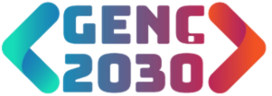
Gönüllü EğitmenVolunteer Instructor
T.C. Gençlik ve Spor BakanlığıRepublic of Türkiye, Ministry of Youth and Sports
GENÇ2030 programı kapsamında, Türkiye genelinde seçilen 500 gönüllü eğitmen arasına girerek 81 ildeki gençlik merkezlerinde yapay zeka eğitimi verme yetkisi kazandım. Ortaokuldan üniversiteye uzanan geniş bir yaş grubuna, yapay zeka okuryazarlığını teori ve uygulamayı birleştirerek aktarıyorum. Under the GENÇ2030 program, I was selected among 500 volunteer instructors nationwide, earning the authorization to deliver artificial intelligence training at youth centers across all 81 provinces of Türkiye. I convey AI literacy to a wide age group, from middle school to university, by combining theory with practice.
- Seçilme & Yetkilendirme:Selection & Authorization: Ankara'da Bakanlık merkez binasında düzenlenen "Dijital Yetkinlikler ve Yapay Zeka Atölyesi"ne katılarak ulusal düzeyde eğitmen olarak yetkilendirildim; İzmir Alsancak Gençlik Merkezi'ni temsil eden 7 kişilik ekipte yer aldım.I was authorized as a nationally accredited instructor by attending the "Digital Competencies and Artificial Intelligence Workshop" held at the Ministry's headquarters in Ankara, as part of the 7-person team representing the İzmir Alsancak Youth Center.
- Sahada Eğitim:Field Training: Alsancak Gençlik Merkezi merkezli olmak üzere; Menemen'de yüzlerce lise öğrencisiyle gerçekleştirdiğimiz yapay zeka konferansı dahil, farklı il ve ilçelerde gençlerle bir araya geldim.Based primarily at the Alsancak Youth Center, I met with young people across different provinces and districts, including an AI conference we held with hundreds of high school students in Menemen.
- İşlediğim Başlıklar:Topics Covered: Yapay zeka temelleri (Dar YZ, AGI, süper zeka), büyük dil modeli platformları (ChatGPT, Claude, Gemini), NotebookLM ile kaynak odaklı araştırma, yapay zeka etiği ve güvenliği (halüsinasyon, deepfake), Vibe Coding metodolojisi, Google AI Studio ile oyun tasarımı ve Antigravity ile web uygulaması geliştirme.AI fundamentals (Narrow AI, AGI, superintelligence), large language model platforms (ChatGPT, Claude, Gemini), source-grounded research with NotebookLM, AI ethics and safety (hallucination, deepfakes), the Vibe Coding methodology, game design with Google AI Studio, and web application development with Antigravity.
İzmir Alsancak Gençlik Merkezi — ARGEİzmir Alsancak Youth Center — R&D
EğitmenInstructor
"Yapay Zeka Destekli Mobil Uygulama Geliştirme Kursu"nun eğitmenliğini üstlendim. 12 hafta boyunca üniversite öğrencileriyle, boş bir ekrandan mağazaya yüklenmeye hazır uygulamaya uzanan süreci, her aşamada yapay zekayı işin içine katarak yürüttük. Süreç sonunda öğrencilerim toplam 8 mobil uygulama geliştirdi. I served as the instructor of the "AI-Powered Mobile Application Development Course." Over 12 weeks, together with university students, we ran the entire journey — from a blank screen to a store-ready app — integrating artificial intelligence at every stage. By the end, my students had built a total of 8 mobile applications.
- Geliştirme & Tasarım:Development & Design: Flutter, Android Studio, Git ve emülatör ortamının kurulumu; Figma ile wireframe, grid, tipografi ve renk prensipleri; Agile/Scrum, MVP ve kullanıcı yolculuğu.Setting up the Flutter, Android Studio, Git, and emulator environment; wireframes, grids, typography, and color principles with Figma; Agile/Scrum, MVP, and user journey.
- Yapay Zeka Üretim Döngüsü:AI Production Loop: Fikirden koda 8 adımlık akış: Stitch ile ekran tasarımı, Antigravity ile Flutter-Dart'a dönüşüm, emülatörde test.An 8-step flow from idea to code: screen design with Stitch, conversion to Flutter-Dart with Antigravity, and testing on the emulator.
- Backend & Güvenlik:Backend & Security: Firebase (Auth, Firestore, Analytics, App Check) ve Supabase; API entegrasyonu, JSON, HTTP metotları, .env ve Zero Trust yaklaşımı.Firebase (Auth, Firestore, Analytics, App Check) and Supabase; API integration, JSON, HTTP methods, .env, and the Zero Trust approach.
- Yayınlama & Monetizasyon:Publishing & Monetization: App Store / Google Play süreçleri, IAP ve abonelik modelleri, açık kaynak lisansları, KVKK/GDPR.App Store / Google Play processes, IAP and subscription models, open-source licenses, KVKK/GDPR.
- Bitirme Projesi:Capstone Project: Google'ın açık kaynak modeli Gemma'yı API üzerinden kullanan, Firebase destekli bir chatbot geliştirildi.A Firebase-backed chatbot was developed using Google's open-source model Gemma via API.
KursiyerTrainee
12 haftalık "Yapay Zeka Destekli Mobil Uygulama Geliştirme Kursu"nu tamamladım. Flutter ile sıfırdan mobil uygulama geliştirme, UI/UX tasarımı, Firebase backend ve yayınlama süreçlerini, her aşamada yapay zeka araçlarını kullanarak uygulamalı şekilde deneyimledim. Süreç sonunda kendi mobil uygulamamı geliştirip yayınlayarak programı başarıyla tamamladım. I completed the 12-week "AI-Powered Mobile Application Development Course." I gained hands-on experience in building mobile apps from scratch with Flutter, UI/UX design, Firebase backend, and publishing processes — using AI tools at every stage. I successfully completed the program by developing and publishing my own mobile application.
Google Oyun ve Uygulama AkademisiGoogle Game & Application Academy
MezunGraduate
Teknik eğitimler, proje yönetimi sertifikasyonu ve bootcamp sürecini başarıyla tamamlayarak akademiden mezun oldum. I graduated from the academy by successfully completing the technical training, the project management certification, and the bootcamp process.
Scrum Master
Oyun ve Uygulama Akademisi'nde 7 aylık eğitim sonunda gerçekleşen Bootcamp sürecinde Unity-108 takımında Scrum Master ve Unity-C# Developer olarak görev aldım. During the Bootcamp held at the end of the 7-month training at the Game and Application Academy, I served as Scrum Master and Unity-C# Developer in the Unity-108 team.
- Unity-C# ile oyunu geliştirdim.Developed the game with Unity-C#.
- Trello uygulaması ile projenin yönetimini sağladım.Managed the project using Trello.
- Ekibim ile birlikte çevik yazılım geliştirme ilkeleri çerçevesinde günlük toplantılar, retrospektif toplantıları ve sprint incelemeleri gerçekleştirdim.Together with my team, held daily stand-ups, retrospective meetings, and sprint reviews within the framework of agile software development principles.
- Geliştirdiğimiz ürünün açıklaması, özellikleri, hedef kitlesi gibi detayları hazırladım. Her bir Sprint sonunda ürünün versiyon kontrolünü sağlamak için GitHub reposunu güncelledim.Prepared details such as the product description, features, and target audience. Updated the GitHub repository at the end of each sprint to maintain version control of the product.
- Süreç boyunca ekibim ile iletişim halinde kalıp motivasyon, zamanlama ve risk yönetimi konularında tecrübe sahibi oldum.Throughout the process, I stayed in close communication with my team and gained experience in motivation, scheduling, and risk management.
Trainee
Akademinin 7 aylık eğitim programında teknik, yönetimsel ve girişimcilik alanlarında kapsamlı bir eğitim aldım. During the academy's 7-month training program, I received comprehensive training in technical, managerial, and entrepreneurship areas.
- Mobil Geliştirme:Mobile Development: Flutter ile çapraz platform uygulama geliştirme, UI/UX tasarımı ve Dart programlama dili.Cross-platform app development with Flutter, UI/UX design, and the Dart programming language.
- Proje Yönetimi:Project Management: Google Proje Yönetimi Uluslararası Sertifika Programı (Coursera - 6 Modül).Google Project Management International Certificate Program (Coursera - 6 Modules).
- Girişimcilik:Entrepreneurship: Teknoloji girişimciliği, İş Modeli Kanvası ve sunum teknikleri.Technology entrepreneurship, the Business Model Canvas, and presentation techniques.
- Oyun Geliştirme:Game Development: Unity ve C#.Unity and C#.
- Versiyon Kontrol:Version Control: Git ve GitHub.Git and GitHub.
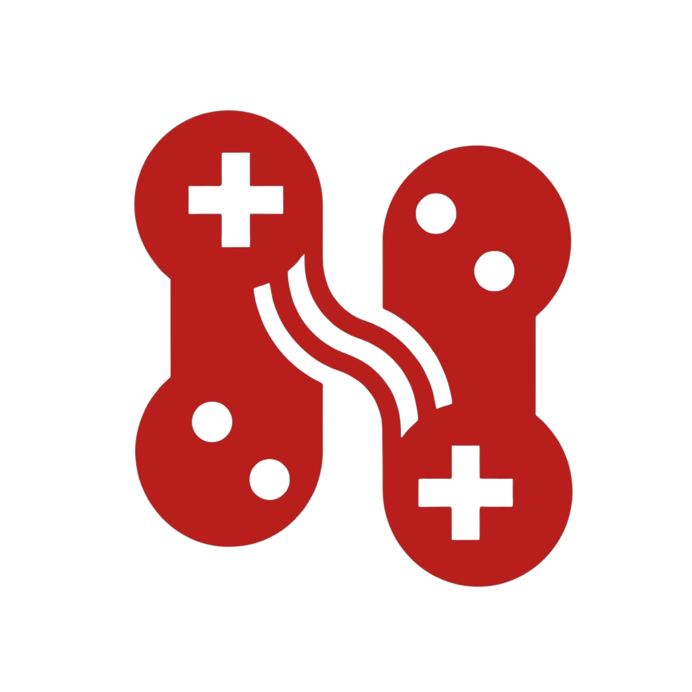
Game Designer
Good Game Design Folks
Serbest oyun tasarımcısı olarak oyun geliştirme ve oyun tasarımı alanlarında projelerde yer aldım. As a freelance game designer, I contributed to projects in the areas of game development and game design.
EğitimEducation
İzmir Bakırçay Üniversitesiİzmir Bakırçay University
Derece:Degree: Lisans, Yönetim Bilişim SistemleriBachelor's Degree, Management Information Systems
%100 İngilizce100% English
İstanbul ÜniversitesiIstanbul University
Derece:Degree: Ön Lisans, Bilgisayar ProgramcılığıAssociate's Degree, Computer Programming
Açık ve Uzaktan Eğitim FakültesiFaculty of Open and Distance Education
Sertifikalar & BaşarılarCertificates & Achievements

GENÇ2030 Dijital Yetkinlikler ve Yapay Zeka AtölyesiGENÇ2030 Digital Competencies & AI Workshop
T.C. Gençlik ve Spor BakanlığıMinistry of Youth and Sports

Yapay Zeka Destekli Mobil Uygulama Geliştirme EğitimiAI-Powered Mobile App Development Training
Alsancak Gençlik MerkeziAlsancak Youth Center
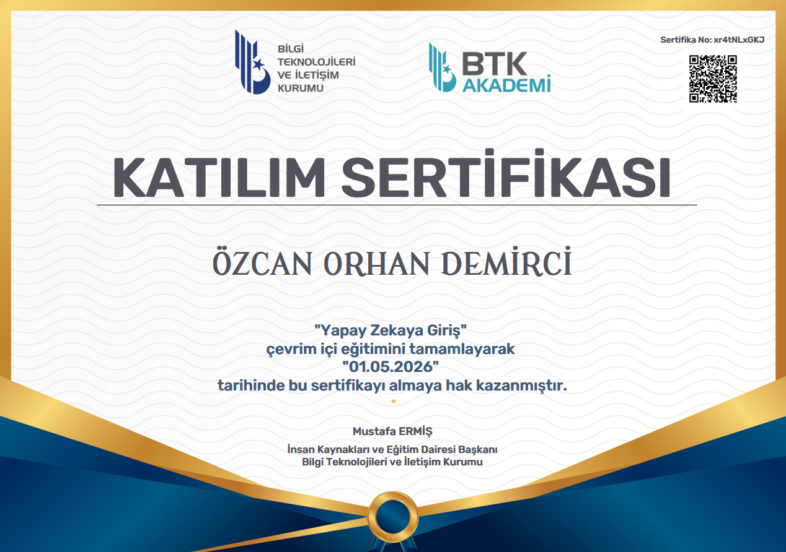
Yapay Zekaya GirişIntroduction to Artificial Intelligence
BTK AkademiBTK Academy
Üretken Yapay Zekaya GirişIntroduction to Generative AI
BTK AkademiBTK Academy
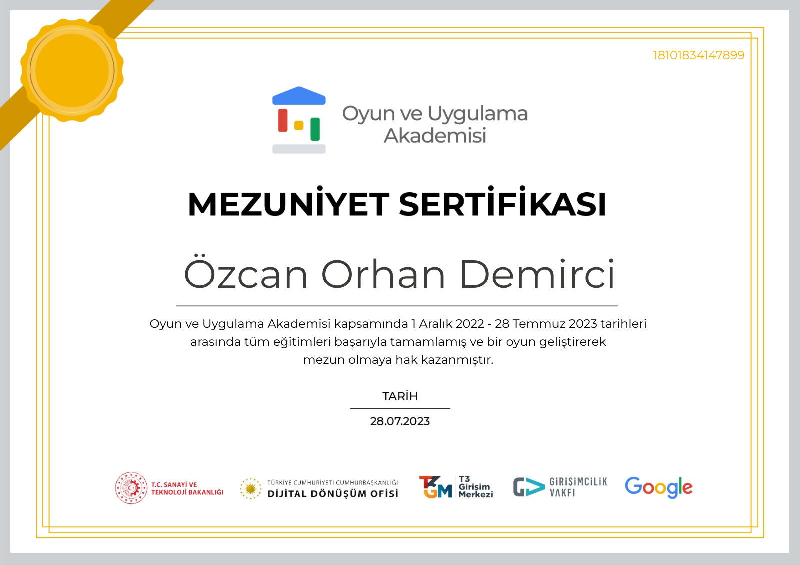
Oyun ve Uygulama Akademisi MezuniyetiGame & App Academy Graduation
Google Oyun ve Uygulama AkademisiGoogle Game & App Academy
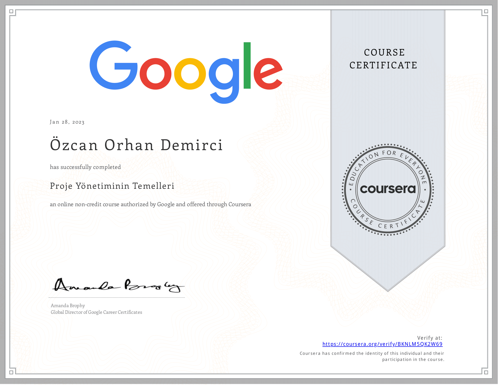
Proje Yönetiminin TemelleriFoundations of Project Management
Projeyi BaşlatmaProject Initiation
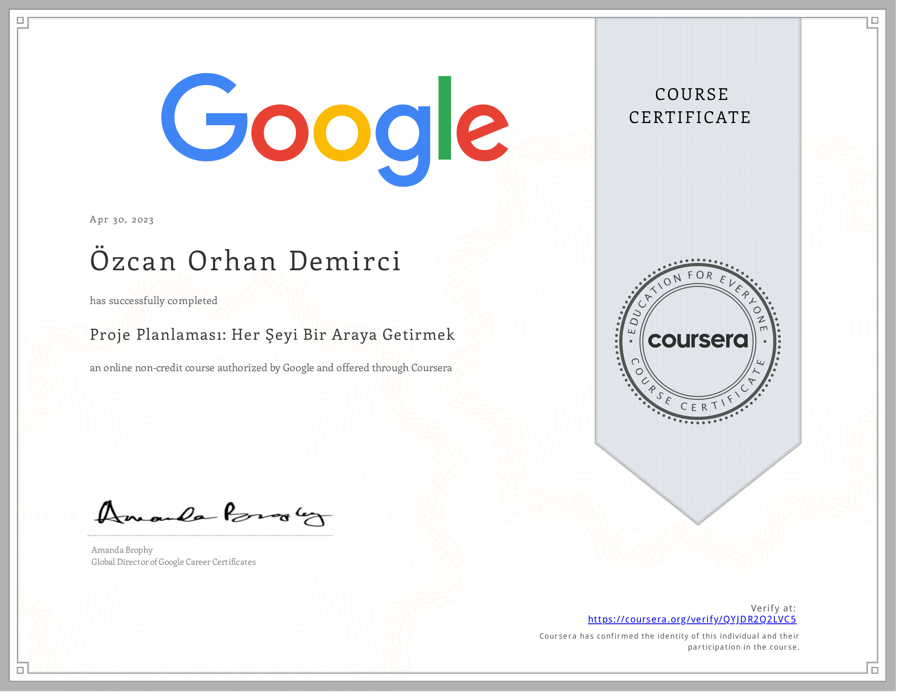
Proje PlanlamaProject Planning
Projeyi YürütmeProject Execution
Çevik Proje YönetimiAgile Project Management
Bitirme: Proje Yönetimini UygulamakCapstone: Applying Project Management
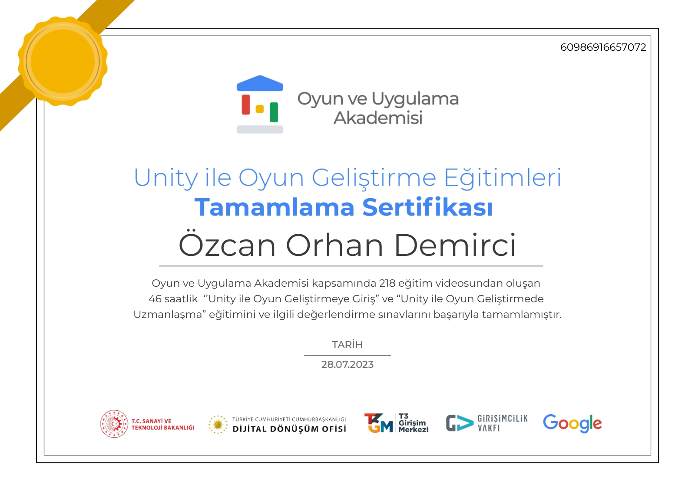
Unity ile Oyun GeliştirmeUnity Game Development
Google Oyun ve Uygulama AkademisiGoogle Game & App Academy
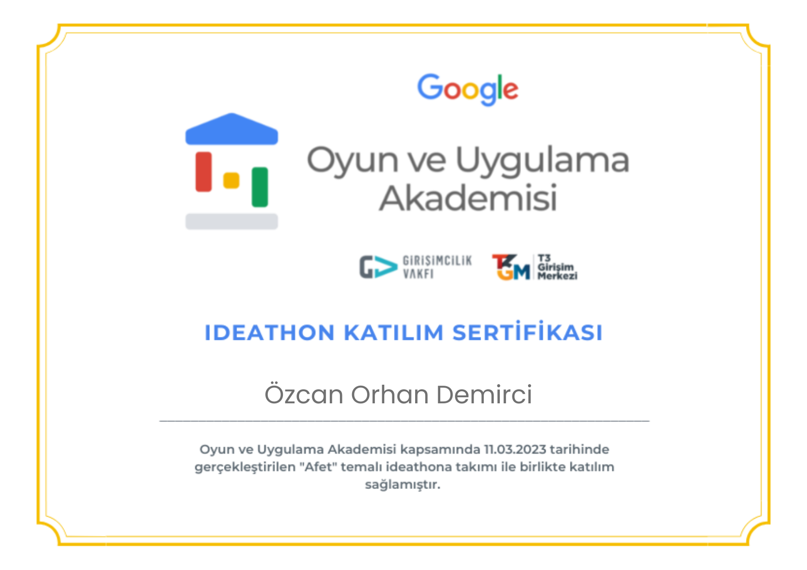
Ideathon KatılımıIdeathon Participation
Google Oyun ve Uygulama AkademisiGoogle Game & App Academy
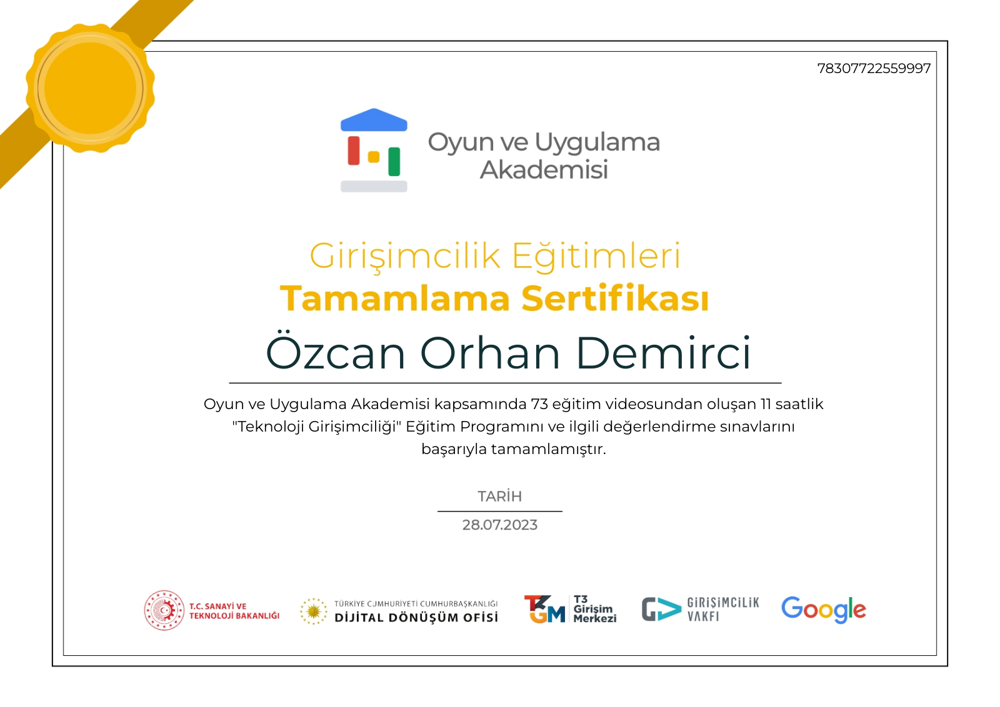
Teknoloji GirişimciliğiTechnology Entrepreneurship
Google Oyun ve Uygulama AkademisiGoogle Game & App Academy
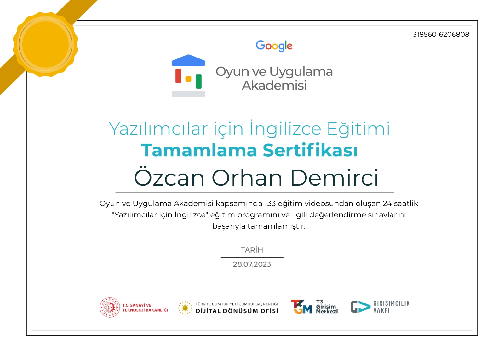
Yazılımcılar İçin İngilizceEnglish for Developers
Google Oyun ve Uygulama AkademisiGoogle Game & App Academy

Uygulamalı Yapay Zeka EğitimiApplied AI Training
TalentCoders
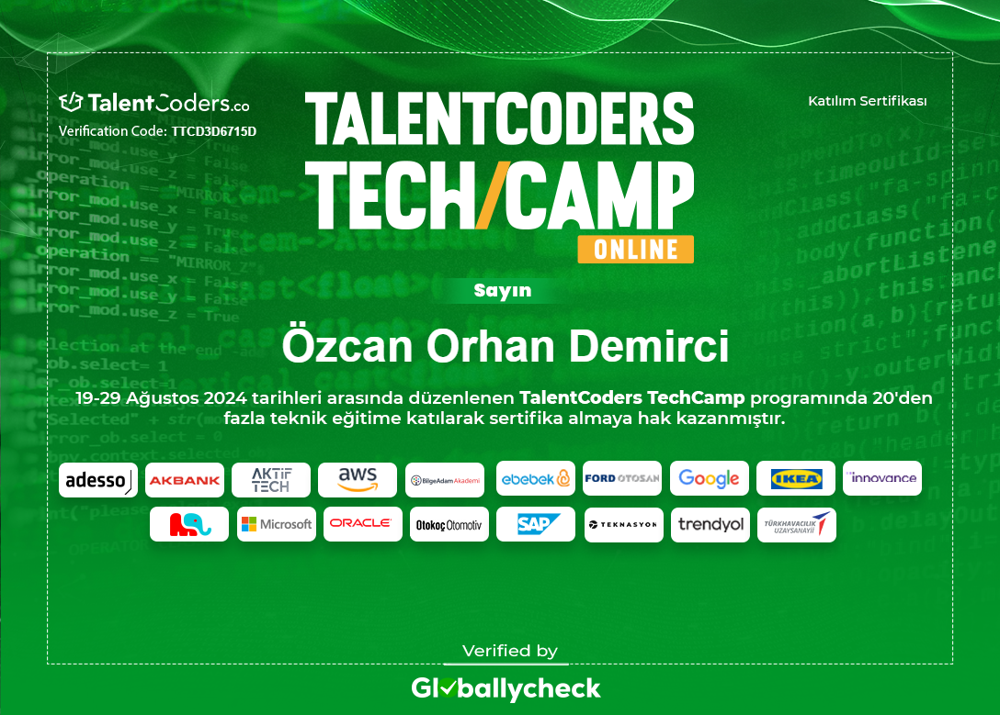
TechCamp KatılımıTechCamp Participation
TalentCoders
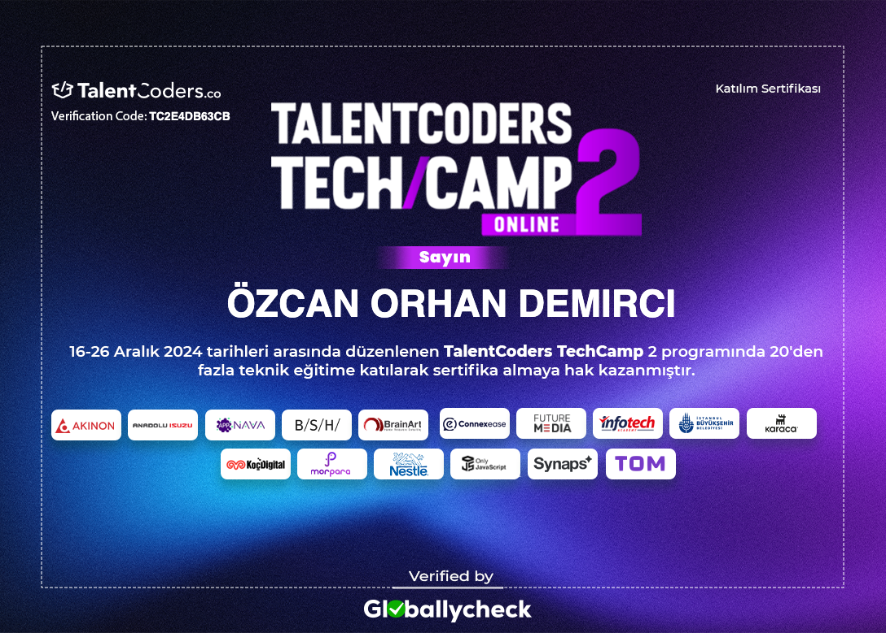
TechCamp 2 KatılımıTechCamp 2 Participation
TalentCoders
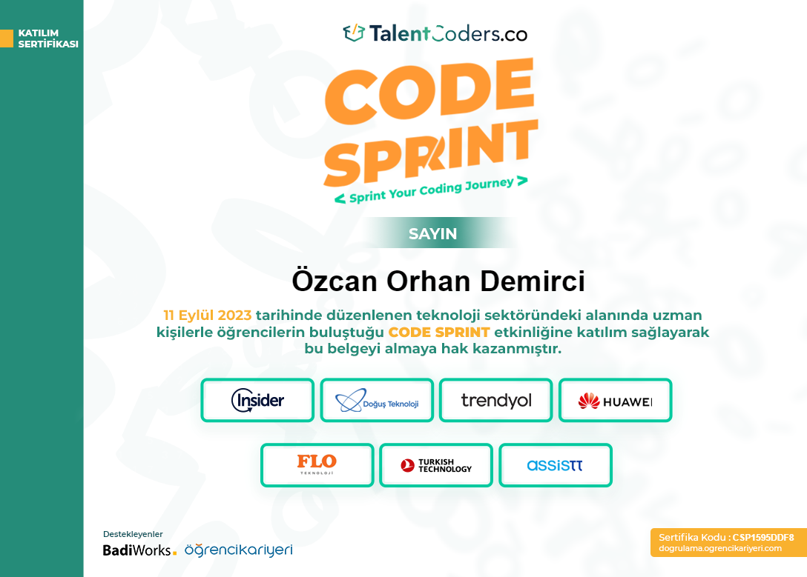
Code Sprint KatılımıCode Sprint Participation
TalentCoders
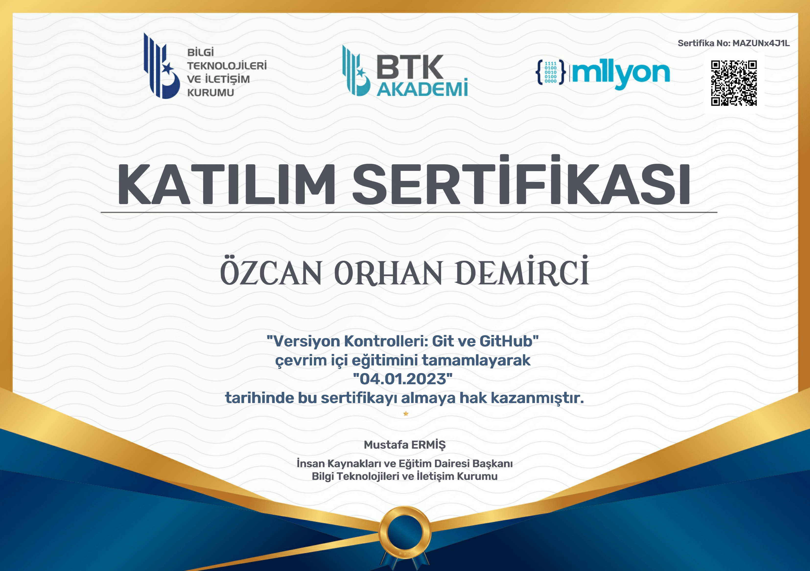
Versiyon Kontrol: Git & GitHubVersion Control: Git & GitHub
BTK AkademiBTK Academy

Hackability Hackathon
IEEE İDÜ & İzQIEEE IDU & İzQ

Sihirli Sistemler GünüMagic Systems Day
Bakırçay ÜniversitesiBakırçay University

YBS Günleri KatılımıMIS Days Participation
Bakırçay ÜniversitesiBakırçay University

Finansal Okuryazarlık Seviye 1Financial Literacy Level 1
SPL (Sermaye Piyasası Lisanslama Sicil ve Eğitim Kuruluşu)SPL (Capital Markets Licensing Registry of Türkiye)

Finansal Okuryazarlık Seviye 2Financial Literacy Level 2
SPL (Sermaye Piyasası Lisanslama Sicil ve Eğitim Kuruluşu)SPL (Capital Markets Licensing Registry of Türkiye)

Finansal Okuryazarlık Seviye 3Financial Literacy Level 3
SPL (Sermaye Piyasası Lisanslama Sicil ve Eğitim Kuruluşu)SPL (Capital Markets Licensing Registry of Türkiye)
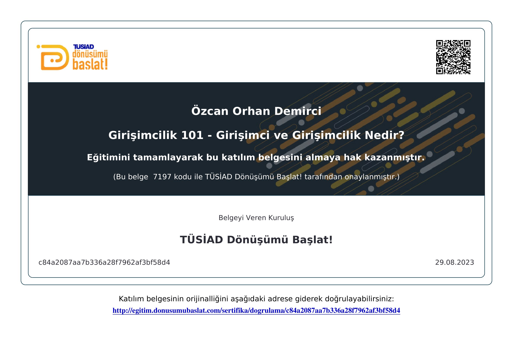
Girişimcilik 101Entrepreneurship 101
TÜSİAD
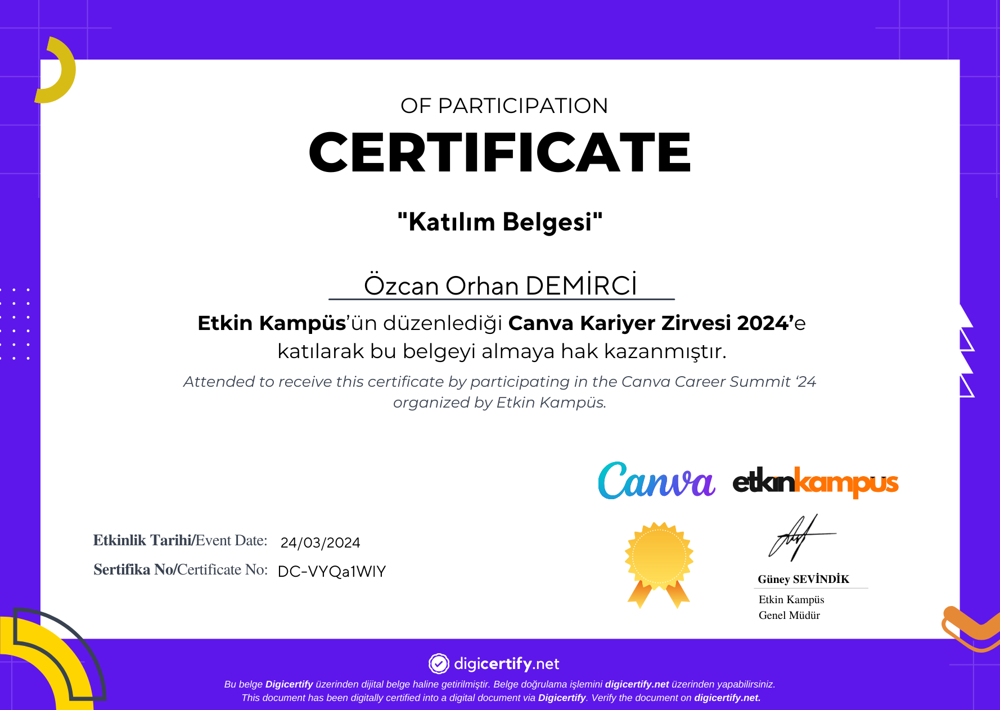
Canva Kariyer ZirvesiCanva Career Summit
Etkin Kampüs

İş Sağlığı ve GüvenliğiOccupational Health and Safety
Bakırçay ÜniversitesiBakırçay University